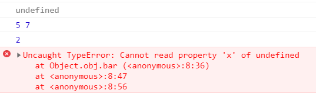

1. Output of code is as follows

2. this inside the function will be binded to the object calling the function. In "use strict" mode, if there no current object, this will be undefined, not global object window.
3. this is not working with Arrow Function because Arrow Function lexically binds the this value. Arrow function saves the binding of this in the closure that's created when the function is created. So it doesn't set this to the context of the call to the function